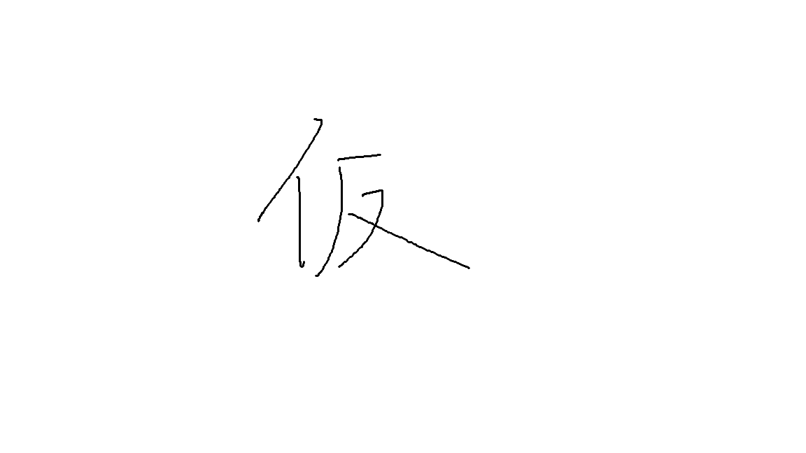

注意事項
・走らず、ゆっくりとお進みください。
~眠っているものを起こしてしまうかもしれません~
・仕掛けにはお手を触れないようお願いいたします。
~不本意に触れますと、何が起こるかわかりません~
・写真撮影は可能です。ただし、フラッシュ撮影はご遠慮ください。
~館内の静寂が乱れてしまいます~
・飲食物の持ち込みはご遠慮ください
~館内のしきたりとなっております~
・館内のふすまは、開けられましたら必ずお閉めください。
~閉め忘れにはくれぐれもご注意ください~

ーどうか、ご無事でお帰りください。 札幌市中央区。1897年、「ささき亭」は、中心地から少し離れた場所にて創業された。宿泊客を温かく迎え入れる亭主と女将のその人柄から、ささき亭は次第に名声を博するようになった。亭主・佐々木喜一郎は、戦前から続く老舗の誇りを胸に、訪れる人々をもてなしていた。しかし、1984年、その栄光は、突然闇に飲み込まれる。
その年の夏、104号室で不可解な事件が相次いだ。宿泊客の失踪、女将の不可解な死、火災による一部消失、、。事件は全て未解決のまま、ささき亭は余儀なく閉鎖されることとなった。
時が経ち、ささき亭の跡地には札幌南高等学校が建設された。札南104号室、、。 そこには不審事件で犠牲になった人たちの霊が成仏できずに取り憑いており、今もなお、助けを求めていると言われている。。。
場所：3階1年4組教室
⚪︎ミッション
部屋に彷徨う霊たちを慰め、ここから生還するために「献花（花を捧げること）」を完遂せよ。決して後ろを振り返ってはならない。